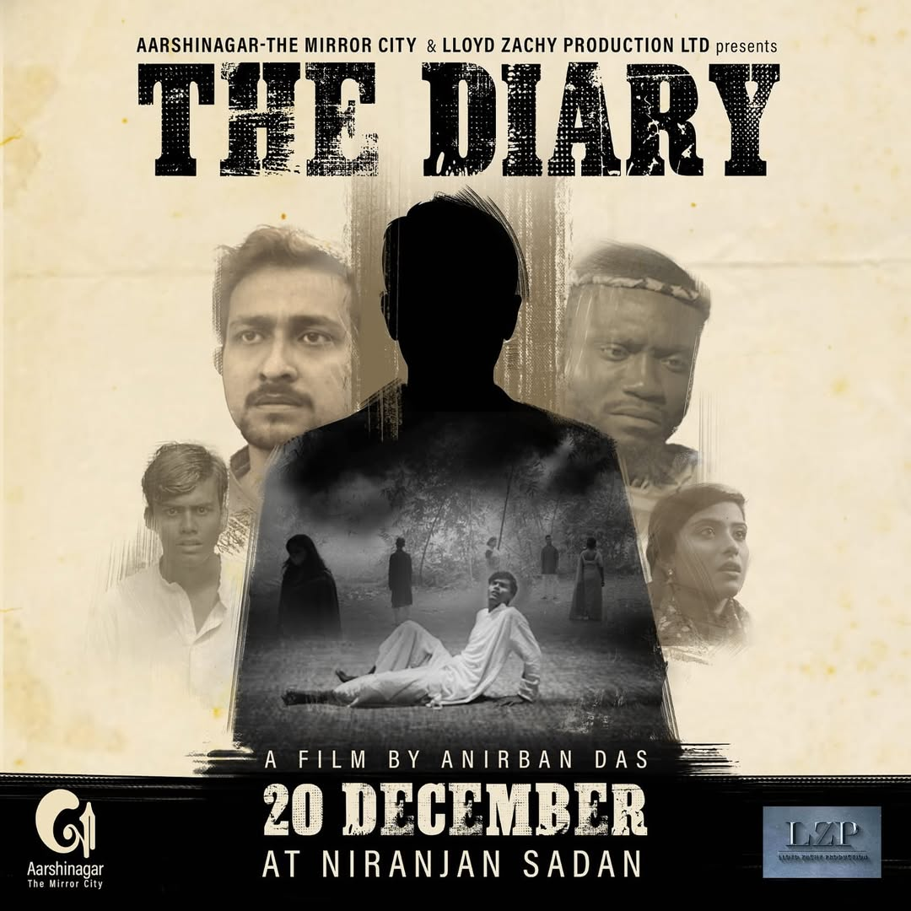

About
After a catastrophe, two brothers traverse a harsh landscape where kindness is scarce. When fate forces them to confront a brutal choice, their bond is tested beyond limits. Set against sweeping plains and silent skies, Rainmaker is a grounded survival drama with raw performances and haunting imagery.
Moments
Previous Movie — The Diary

A prior feature from the team behind Rainmaker. Watch the official trailer below.